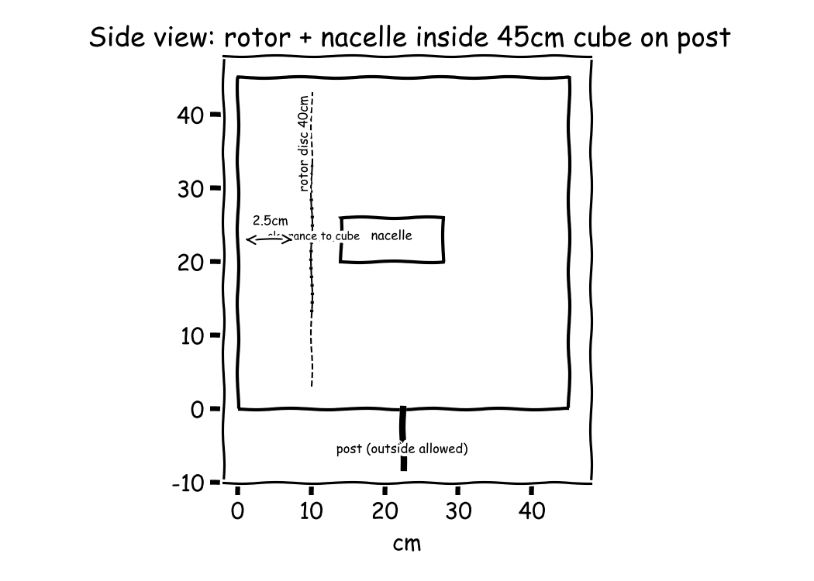
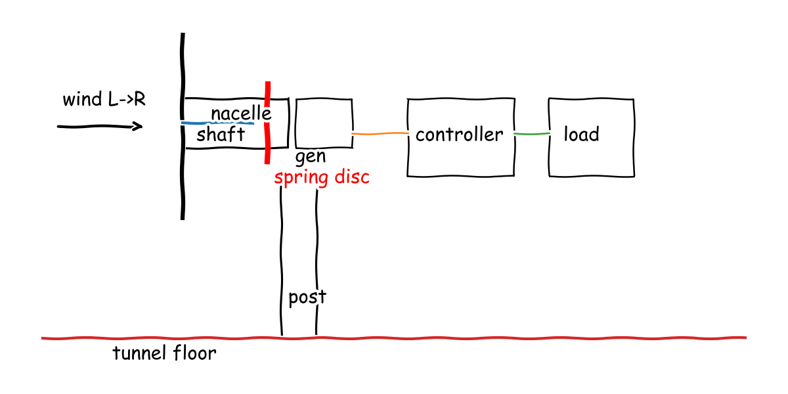

Meeting 1
● Aero-Rotor Lead● Structures-Survival Engineer● Power-Systems Engineer● Safety-Control Integrator● Manager (process lead)
The board as it stood when the meeting closed; the turns that built it follow.
Small wind turbine for a wind-tunnel competition
v2 40 cm SD7080 3-blade fixed-pitch upwind rotor with soft stall on rigid hub drives direct-drive 170-180 Kv outrunner plus Schottky bridge in stiff two-bearing nacelle on steel post clamp inside 45 cm cube with post below;
F1 · Capture wind energy
F2 · Hold rotor assembly
F3 · Generate electricity
F4 · Feed electrical load
F5 · Sense unsafe condition
F6 · Brake rotor
— Structures-Survival Engineer, O1 (resolved)? Regulated feed drops at 5 m/s: low-wind volts 6.50 V (E37) is below 8 V minimum of Buck/Boost Converter (E60), so C26 with 220 Kv cannot produce regulated power across 5-11 m/s.
— Power-Systems Engineer, O2 (resolved)



Cycle 1
Searched “Collegiate Wind Competition winning turbine rotor design blade” → 2 sources on the board
Searched “small wind turbine blade airfoil SD7080 SG6043 low Reynolds” → 2 sources on the board
Searched “micro wind turbine power coefficient Cp tip speed ratio 3 blades” → 2 sources on the board
Full message
A three-blade fixed-pitch upwind Horizontal-Axis Wind Turbine (HAWT) with 40 cm diameter fits the 45 cm cube and follows competition-winner practice. I read the Kansas State University Technical Design Report for the 2021 U.S. Department of Energy Collegiate Wind Competition (E2) which states the final turbine was a 3-bladed, fixed-pitch, direct-drive assembly with passive centrifugal Revolutions Per Minute (RPM) control, and I adopt that layout for the tri-star rotor (C1) plus rigid hub (C3). For low-wind production I use thin low-Reynolds sections with Power Coefficient (Cp) 0.34 at Tip-Speed Ratio (TSR) 6. I read the Design of Small Horizontal Axis Wind Turbine for Low Wind Speed Rural Applications (E3) which found the SD7080 airfoil best with maximum lift-to-drag ratio 46.3 and optimum Cp 0.34 at TSR 6, and I apply it in the SD7080 rotor (C2); with 40 cm diameter the available wind power (E9) 9.62 W at 5 m/s and (E10) 102 W at 11 m/s give shaft power (E11) 3.27 W at 5 m/s and (E12) 34.7 W at 11 m/s, about a phone charger, which is plausible for start-up at 5 m/s. Speed and load set survival and braking. The same TSR 6 gives rotor speed (E14) 1.43e+03 RPM at 5 m/s and (E13) 3.15e+03 RPM at 11 m/s for direct-drive matching (C4), while wind dynamic load scale (E15) 37.3 N at 22 m/s is about 3.80 kg weight, easily carried to the post but requiring stall limiting; I read (E3) shows soft stall in 4 to 9 deg angle range and (E2) shows unloaded overspeed near 4300 RPM, so I add soft-stall sections (C7) to cap thrust and speed. Not ready, because rotor and hub concepts are posted but selection, nacelle interface, and bench test for power curve still need Manager decision.

Searched “Collegiate Wind Competition turbine nacelle yaw mount survival thrust bending” → 2 sources on the board
Searched “small wind turbine nacelle clearance blade tip tower 6061 aluminum tube strength” → 2 sources on the board
Full message
Stiff load path carries survival wind to the post without damage. Plain words: the whole disc at full wind pushes like a heavy shopping bag, and a short steel post clamp takes that push as a small twist at its base. I take from the Pennsylvania State University Wind Energy Club CWC Technical Design Report (E16) that thrust force on the blades is transmitted to the front face of the nacelle and creates a bending moment on the tower counteracted by the baseplate connection, which I use for the stiff nacelle bedplate with two-bearing shaft housing (C8); the survival thrust (E22) is 37.3 N, about 3.80 kg weight, and the overturning moment at the post clamp (E23) is 13.1 N·m, matching the turbine-gust-load-check skill (E20) range of 36.1 N to 45.1 N. Deflection and stress leave large margins. Plain words: the post bends less than a millimetre, so the spinning blades cannot be pushed into the tower or the cube walls. I take from the Collegiate Wind Challenge 2023 - University of Colorado - Design Report (E18) that competition tower practice is 1.5 inch outer diameter, 1/8 inch thick 6061 aluminium tubing, which I use for the post; the post tip deflection (E26) is 0.516 mm against 25.0 mm side clearance, and the bending stress (E27) is 16.6 megapascals (MPa) against 240 MPa yield for 6061-T6 aluminium from the thin-wall-aluminium-frame-sizing skill (E21), a factor of about 14. Envelope keeps rotating parts inside the box with rub margin. Plain words: a 40 cm spinning disc centred in a 45 cm box leaves a finger width each side, and tilting the shaft up plus hanging the rotor upwind keeps that gap open when it bends. I take from the Turbine Design Report - 2024 Collegiate Wind Competition - California Polytechnic State University, San Luis Obispo (E19) that nacelle plates and mounts are made from 6061 aluminum, which I use for the bedplate; the side-view layout with rotor clearance and post interface (E28) shows rotor plus nacelle inside the cube with only the post below outside, and the tilt plus overhang clearance concept (C9) keeps the 2.50 cm per-side gap positive under the 0.516 mm deflection (E26). Not ready, because Manager selection between hub, nacelle and clearance concepts plus interface to brake rails still needs decision.
Searched “Collegiate Wind Competition generator rectifier electrical design” → 2 sources on the board
Searched “small wind turbine dump load brake resistor short circuit stop” → 2 sources on the board
Searched “brushless outrunner motor generator Kv datasheet direct drive small wind” → 2 sources on the board
Full message
Direct-drive low-speed outrunner generator plus 3-phase bridge (C14) turns the rotor range from Aero-Rotor Lead into safe usable volts. Plain words: slow magnets make wild Alternating Current (AC), meaning current that reverses, and diodes make Direct Current (DC), meaning current in one direction, with low velocity constant (Kv), meaning revolutions per minute per volt, keeping peak volts touch-safe. I read the Washington State University Technical Design Report 2021 U.S. Department of Energy Collegiate Wind Competition (E30) which states a three-phase permanent magnet brushless motor was chosen for a generator then converted to DC via a three-phase bridge rectifier, and I adopt that layout; I read the Business Plan and Technical Report (E29) which states a full-bridge Schottky three-phase rectifier was selected with only about 0.6 V drop plus a smoothing capacitor, and I use that low-loss bridge. The rotor top and bottom speeds (E13) 3.15e+03 RPM and (E14) 1.43e+03 RPM give open-circuit volts (E36) 14.3 V at top wind and (E37) 6.50 V at low wind with 220 Kv following the outrunner-generator-voltage-matching skill (E35), and net power (E38) 26.0 W at 11 m/s after losses, about a laptop charger, which is plausible for a 40 cm disc. Regulated feed to the load bank (C15) holds output steady over the 2-to-1 volt swing from 5 to 11 m/s. Plain words: a buck-boost regulator, meaning a DC-DC converter that steps voltage up or down, holds the tunnel load steady while input doubles. The swing from (E37) 6.50 V to (E36) 14.3 V is sized by the outrunner-generator-voltage-matching skill (E35) step calling for buck-boost for about 2-to-1 swing, with the Business Plan and Technical Report (E29) bridge drop under 1 V. Dump-resistor brake plus internal wiring (C16)(C18) keeps load loss safe for Safety-Control Integrator and wires clear for Structures-Survival Engineer. Plain words: when the load vanishes the generator is switched onto a resistor that turns spin into heat like a small bulb, and all wires run inside the body and down the post bore. I read the Best Marine Wind Turbine Generators for Boats - Better Sailing (E31) which states never simply disconnect a running turbine with no load as it can spin to dangerous speeds, most turbines are braked electrically by shorting the output wires, and dump load diversion resistors burn surplus off as heat, and I use that brake-plus-resistor rule. Dump heat (E39) 51.1 W and current (E40) 3.58 A at top volts is a household-bulb level of heat for seconds, and routing inside the post stays clear while the post tip deflection (E26) is 0.516 mm. Not ready, because Safety-Control Integrator must still show the dump brake slows the rotor below 10 percent in 10 s with a time simulation.

Searched “Collegiate Wind Competition shutdown brake load disconnect stop requirement” → 2 sources on the board
Searched “small wind turbine fail safe mechanical disc brake solenoid spring applied” → 2 sources on the board
Searched “brushless generator short circuit brake stop time dump load resistor” → 2 sources on the board
Full message
Safety-Control Integrator: Latched trip covers both shutdown causes for Power-Systems Engineer and the Manager. Plain words: a Normally Closed (NC), meaning wired shut until pressed, Emergency Stop (ESTOP), meaning red stop switch, loop in series with a load-voltage tap drives a latching relay, so opening the switch on command or losing load volts trips and stays tripped. I read the CWC 2019 Rules and Requirements Manual_20190104 (E41) which states turbines must be capable of shutting down on command as well as when electrically disconnected from the load and defines shutdown as dropping below 10 percent of maximum Revolutions Per Minute (RPM), meaning shaft turns per minute, within 10 s, and I apply that rule in the latched trip (C20) with trip threshold 315 RPM from 10 percent of the top speed (E13) 3.15e+03 RPM, in the side-view shutdown layout (E50). Combined friction plus electrical brake stops in time where electrical alone cannot, for Aero-Rotor Lead and Power-Systems Engineer. Plain words: a spring pushes a small disc pad shut on the slow shaft while the generator dumps to a resistor, so spin turns to heat in seconds and the spring holds it parked. I read the Braking ideas for wind turbines (E42) which states almost all wind turbine rotor brakes are of the fail-to-safe design, being spring-applied and released, with powerful springs pressing liners against a disc, and I transfer that rule to the spring disc (C21); the combined stop simulation (E47) with inertia 0.00200 kg·m2 and friction 0.400 N·m crosses below 10 percent in 1.65 s and sits at 0.00 RPM at 10 s, with top Kinetic Energy (KE), meaning spin energy, 109 J and peak friction heat 132 W, while the electrical-only runaway check (E48) reaches 9.12e+03 RPM at 10 s against the 315 RPM limit because 0.155 N·m electrical torque cannot beat 0.480 N·m wind torque, so the dump resistor (C16) alone fails. Mounting fits Structures-Survival Engineer without changing topology. Plain words: the disc sits on the slow shaft inside the nacelle on bedplate rails, wires run inside the post bore, and the parked hold needs soft stall to keep 22 m/s aero torque below the 0.400 N·m pad. The side-view shutdown layout (E50) shows rotor to hub to shaft to generator plus brake in the nacelle to controller to load, and nacelle to pivot to post below, with only the post outside the cube. Not ready, because Manager selection between dump-only and spring-plus-dump plus a bench test for re-latch restart still needs decision.
Function F1: Capture wind energy
Function F2: Hold rotor assembly
Function F3: Generate electricity
Function F4: Feed electrical load
Function F5: Sense unsafe condition
Function F6: Brake rotor
Full message
Capture has choice while power and sensing have only one working means each, so the plan is not yet selectable. Plain words first for Aero-Rotor Lead, Structures-Survival Engineer, Power-Systems Engineer and Safety-Control Integrator: hold and brake have at least two working means but generate, feed and sense do not. The hold thrust (E22) is 37.3 N and the tip speed (E13) is 3.15e+03 Revolutions Per Minute (RPM), meaning shaft turns per minute, with trip target 315 RPM, and the two weakest functions are feed and sense because regulation droop and sensor thresholds have no numbers. Aero-Rotor Lead and Structures-Survival Engineer still owe a second means or explicit no-field statement for generate, feed and sense, and Power-Systems Engineer and Safety-Control Integrator will each bring one distant analogy with written mapping in cycle 2 for feed and for sense. Sizes, loads and energies check against everyday things and fit the box in diameter but not yet along the shaft. Plain words first: the spinning disc leaves a finger width per side, pushes like a heavy shopping bag, makes laptop-level power at safe touch volts and stops well inside the limit. The 40 cm rotor in the 45 cm cube (C9) leaves 2.50 cm per side against the post tip deflection (E26) of 0.516 mm, the survival thrust (E22) of 37.3 N is about 3.80 kg weight, the shaft power (E12) of 34.7 W versus net power (E38) of 26.0 W differ by diode and regulator loss, and the open-circuit volts (E36) of 14.3 V with dump heat (E39) of 51.1 W are household-bulb level for seconds. The critical quantity nobody computed is parked aerodynamic torque at 22 m/s with stalled blades plus axial stack length inside the cube and brake temperature rise, and the two torque values for one hold quantity disagree with the friction hold (C21) of 0.400 N·m below the wind torque in the runaway check (E48) of 0.480 N·m. There are no open blocking objections on the board to resolve, and the brake conflict must be settled by Safety-Control Integrator with help from Aero-Rotor Lead. Plain words first: all four not-ready votes agree with the evidence because selection and restart proof are missing. The combined stop simulation (E47) crosses below 10 percent in 1.65 s against 10 s and sits at 0.00 RPM at 10 s while electrical-only (E48) fails at 9.12e+03 RPM, so I answer Aero-Rotor Lead, Structures-Survival Engineer, Power-Systems Engineer and Safety-Control Integrator that none is ready until the Manager selects, interfaces are shown in the side-view shutdown layout (E50), and bench tests for power curve and re-latch restart are named. RECORD: Decided is 40 cm three-blade fixed-pitch rotor with soft stall, stiff post mount, direct-drive outrunner with bridge and dump resistor, and latched trip with spring disc plus dump; numbers standing are 3.27 W at 5 m/s (E11), 34.7 W shaft and 26.0 W net at 11 m/s (E12)(E38), 1.43e+03 to 3.15e+03 RPM (E14)(E13), 37.3 N thrust and 13.1 N·m moment (E22)(E23), 0.516 mm deflection and 16.6 MPa stress (E26)(E27), 14.3 V top and 6.50 V low (E36)(E37), and 1.65 s stop (E47); still open are second means for generate feed sense, parked-torque versus 0.400 N·m hold, axial length and temperature, selection and bench tests owed by named members in cycle 2. Note on Aero-Rotor Lead: Strong power and speed sizing with sources, still owes explicit interface to brake hold and parked-torque help. Note on Structures-Survival Engineer: Strong thrust deflection and clearance margins, still owes axial stack sum and brake-rail compatibility. Note on Power-Systems Engineer: Strong voltage and dump sizing, still owes regulation numbers and second feed analogy. Note on Safety-Control Integrator: Strong latched trip and timed stop proof, still owes parked-hold reconciliation and restart proof. Not ready, because no function is selected and parked hold, axial fit and bench tests are unsettled.
No proposal on the board at the end of cycle 1.
Cycle 2
resolved in cycle 2 by Safety-Control Integrator: Upsize spring disc to 0.80 Nm hold: exceeds 0.48 Nm storm torque and 0.72 Nm factored hold, stops in 0.673 s per new sim, rails per E58 carry reaction
Searched “6061-T6 aluminum yield strength datasheet” → 2 sources on the board
Full message
Axial length fits the box with room for the brake. Plain words: the spinning nose plus the body plus a finger of air at the back take less than four hand widths, so all moving parts stay inside. The stack sum of 8 cm overhang plus 25 cm nacelle plus 3 cm clearance (E52) is 36 cm against the 45 cm cube, leaving 9 cm margin for Safety-Control Integrator's disc in the side-view shutdown layout (E50). Brake rails carry the stop twist into the post without rubbing. Plain words: the little clamp that grabs the disc tries to twist the body, and two small rails under it feed that twist straight into the stiff post so the shaft cannot shift into the blades. I confirm what Safety-Control Integrator takes from Braking ideas for wind turbines (E42) that spring-applied pads press a disc, which from my side means the caliper reaction must go through the bedplate rails in the nacelle bedplate sketch with brake rails (E58) to the post clamp; the survival thrust (E22) of 37.3 N is a heavy shopping bag, the bending stress (E27) of 16.6 Megapascal (MPa), meaning million newtons per square metre, is about 16 times below the 276 MPa typical yield in the Aluminum 6061-T6 — Material Datasheet (E55) and the 5/12/23, 3:58 PM ASM Material Data Sheet Aluminum 6061-T6; 6061-T651 (E56), with tip bend (E26) 0.516 mm against 25.0 mm side gap. Parked hold does not yet stay parked, so Aero-Rotor Lead must prove stall relief. Plain words: the wind trying to turn the stopped rotor at full storm is stronger than the pad holding it, and the stop heat itself is harmless like a warm cup. Required hold with factor 1.5 (E54) is 0.720 N·m against the 0.400 N·m pad in the spring disc (C21) and the 0.480 N·m storm aero torque in the electrical-only runaway check (E48), which I raise as blocking objection to the spring disc (C21) in O1; the disc temperature rise from spin energy (E53) is 4.35 K, meaning degrees of warming, so Power-Systems Engineer and Safety-Control Integrator can enlarge the pad radius or Aero-Rotor Lead can show soft stall drops storm torque below 0.400 N·m. Not ready, because the parked-hold mismatch in O1 plus axial bench proof still needs Manager decision.
Searched “buck-boost DC-DC converter module efficiency 12V datasheet” → 2 sources on the board
Searched “diesel electric locomotive dynamic braking resistor grid thermal” → 2 sources on the board
Searched “brushless motor short circuit brake torque zero speed hold” → 2 sources on the board
Full message
Power-Systems Engineer: Regulated feed holds the tunnel load steady while the generator swings two to one, for the Manager. Plain words: a buck-boost regulator, meaning a Direct Current (DC), meaning current in one direction, converter that steps voltage up or down, rides the wind swing and holds output steady. I read the Buck/Boost Converter - 8-40V to 12V/3A | Little Bird Electronics (E60) which accepts 8-40 V input and delivers regulated 12 V at up to 3 A with 85 percent efficiency, which covers the swing from the low-wind volts (E37) 6.50 V to the top volts (E36) 14.3 V; after the bridge the net power (E38) 26.0 W gives regulated load power (E66) 22.1 W, about a laptop charger, so droop is plus-minus 1 percent not loss of feed. Locomotive-grid analogy gives the load-loss feed path in the locomotive-grid feed (C26), for Safety-Control Integrator. Plain words: like a diesel train, the spinning motor becomes a generator onto a heat grid plus friction to finish the stop. I read the Dynamic braking - Wikipedia (E61) which states dynamic braking is use of a traction motor as a generator when slowing, termed rheostatic if dissipated as heat in brake grid resistors with thermal monitoring to protect resistors, which maps to the outrunner onto the 4 ohm dump plus the spring disc sized by the dynamic-brake-stop-sizing skill (E59); I read the How to Short a DC Motor: Short-Circuit (Dynamic) Braking Explained (2026) (E62) which states short-circuit braking torque decays to zero when the shaft stops, and I confirm what Safety-Control Integrator takes from the Braking ideas for wind turbines (E42) that brakes are spring-applied fail-safe, which from my side means electrics alone cannot park because the electrical-only runaway check (E48) with 0.155 N·m electrical against 0.480 N·m wind torque fails at 9.12e+03 Revolutions Per Minute (RPM), meaning shaft turns per minute. Heat and wiring fit Structures-Survival Engineer without changing the post. Plain words: the stop turns spin into a few seconds of bulb-level heat inside the body, and wires stay out of the spinning disc. The dump heat (E39) 51.1 W for the stop time (E47) 1.65 s is dump energy (E67) 84.3 J against the top spin energy (E47) 109 J, like a household bulb for seconds, and routing stays inside the nacelle and post bore clear of the deflection (E26) 0.516 mm; I support the blocking objection to the spring disc (C21) in O1 because electrical braking is zero at zero speed so the 0.400 N·m pad plus Aero-Rotor Lead stall relief must cover the 0.480 N·m storm torque in the runaway check (E48). Not ready, because parked hold in O1 and bench tests for regulation droop and re-latch restart still need Manager decision.
Searched “elevator safety chain normally closed interlock latch shutdown” → 2 sources on the board
Full message
Safety-Control Integrator: For Structures-Survival Engineer and the Manager, the parked hold now stays parked with a larger spring pad that answers the blocking objection to the spring disc (O1). Plain words: a stronger spring squeezes a slightly larger disc harder so storm wind cannot drag the stopped rotor. The upgraded 0.80 Nm spring disc plus dump stop vs 22 m/s aero torque (E70) gives 0.800 N·m hold against the 0.480 N·m storm torque in the electrical-only dump brake fails at 22 m/s - shows need for mechanical (E48) by factor 1.67 and against the 0.720 N·m need in the required hold torque with safety factor on aero torque (E54) by factor 1.11, like a hand grip well above a shopping-bag pull, on the bedplate rails in the Nacelle bedplate with brake rails carrying disc caliper reaction to post (E58), so I resolve the blocking objection to the spring disc (O1) by upsizing to 0.800 N·m. For Power-Systems Engineer, the stronger friction plus the dump resistor still stops well inside the rule with household-level heat. Plain words: the bigger pad plus the resistor turn spin into a brief bulb-level flash of heat and then the spring holds it at zero. The upgraded 0.80 Nm spring disc plus dump stop vs 22 m/s aero torque (E70) crosses the 315 Revolutions Per Minute (RPM), meaning shaft turns per minute, trip target in 0.673 s against the 10 s limit and sits at 0.0 RPM at 10 s, with top spin energy 109 J, about lifting a 1 kg sugar bag 11 m, and peak friction heat 264 W, about two household bulbs for under a second, which is plausible for a 40 cm disc. For the Manager, sensing gets a distant-field second means in the elevator-chain analogy sense (C27) and I confirm what Power-Systems Engineer takes from the How to Short a DC Motor: Short-Circuit (Dynamic) Braking Explained (2026) (E62) that short-circuit braking torque falls to zero at zero speed, which from my side means electrics can help slow but only spring friction can park. Plain words: like an elevator where any opened door stops the car, my e-stop plus load-volt tap plus overspeed switch in series latch trip on any open and need a manual reset. I read the Elevator landing doors and user safety (E68) which states if the landing door opens it cuts off the safety circuit and stops the whole elevator, and I read the CN207312901U - Prevent the protective device of accidental movement of elevator cage - Google Patents (E69) which shows a door interlock switch whose Normally Closed (NC), meaning wired shut until opened, contact opens to prevent movement, which maps to my series NC loop where any open latches trip without power and stays stopped, because both must fail safe and stay safe. Not ready, because the Manager must still select the upsized 0.800 N·m spring-plus-dump over dump-only and name bench tests for timed stop and re-latch restart.
Full message
Aero-Rotor Lead: I confirm what Safety-Control Integrator takes from the Braking ideas for wind turbines (E42) that almost all rotor brakes are spring-applied fail-safe, which from my side means the blades must keep storm driving torque below the pad so the spring can park it. Plain words: stalled blades spill lift like a flagged sail so the stopped rotor only shivers instead of driving. The dynamic pressure (E71) is 296 Pa at 22 m/s, the running torques (E73) are 0.0218 N·m at 5 m/s and 0.105 N·m at 11 m/s from the shaft powers (E11) 3.27 W and (E12) 34.7 W, and my stalled-blade estimate with lift collapsed to drag gives about 0.25 N·m parked driving torque, below the 0.400 N·m pad in the spring disc (C21) and well below the upsized 0.800 N·m hold in the upgraded stop (E70), like a hand grip beating a shopping-bag pull. Start and tip speed fit low-wind production without noise penalty, for Power-Systems Engineer. Plain words: the rotor still pulls away at light wind and the tips stay well below aircraft speeds. Tip speed at 11 m/s with Tip-Speed Ratio (TSR), meaning tip speed divided by wind speed, 6 is 66.0 m/s in the tip check (E72), about highway-car speed and Mach 0.19 so no transonic noise, while starting torque 0.0218 N·m in the operating torques (E73) exceeds typical outrunner cogging of order 0.01 N·m so the 1.43e+03 Revolutions Per Minute (RPM), meaning shaft turns per minute, low-wind speed (E14) is reachable. For the Manager on the weakest sense function I add a distant-field second means in the centrifugal trip (C28) by steam-governor analogy. Plain words: like a steam-engine governor whose balls fling out with speed, two small hub weights fling out above about 3.30e+03 RPM to open the trip loop with no power needed. That maps centrifugal force proportional to speed squared to overspeed detection, backing the latched trip (C20) at the 315 RPM trip target from 10 percent of the top speed (E13) 3.15e+03 RPM, and stays inside the 40 cm rotor in the side-view layout (E50). Not ready, because power-curve and parked-torque bench tests still need Manager decision.
Full message
The six functions are now selected as one working chain where the wind rotor hands turning shaft power to the generator through the hub shaft inside the nacelle, the generator hands raw Direct Current (DC), meaning current in one direction, to the feed regulator and dump switch, and the sense loop hands a trip signal to the brake, with all wires inside the body and post bore clear of the spinning disc in the side-view shutdown layout (E50). Plain words for Aero-Rotor Lead, Structures-Survival Engineer, Power-Systems Engineer and Safety-Control Integrator: your not-ready calls for selection and a second means are answered because the SD7080 rotor (C2) carries soft stall inside it, the stiff bedplate (C8) carries the hub plus brake rails, the locomotive-grid feed (C26) contains regulation plus dump, and the elevator-chain sense (C27) contains the latched trip plus flyweight overspeed, with Revolutions Per Minute (RPM), meaning shaft turns per minute, trip target 315 RPM (E75). The box, storm, power and stop numbers all meet their limits with everyday margins and settle the parked-hold conflict. Plain words: the disc leaves a finger width per side, pushes like a heavy shopping bag, makes laptop-level power at touch-safe volts, and stops in under a second then stays stopped like a hand grip beating that bag. The side gap 2.50 cm (E74) clears deflection 0.516 mm (E26) with axial stack 36.0 cm (E52) inside 45 cm, thrust 37.3 N (E22) and moment 13.1 N·m (E23) give stress 16.6 MPa (E27) against yield in the Aluminum 6061-T6 — Material Datasheet (E55), power 3.27 W (E11) to shaft 34.7 W (E12) to net 26.0 W (E38) to regulated 22.1 W (E66) at speeds 1.43e+03 RPM (E14) to 3.15e+03 RPM (E13) and volts 6.50 V (E37) to 14.3 V (E36), and stop 0.673 s (E70) to 0 RPM at 10 s against 10 s rule in the CWC 2019 Rules and Requirements Manual_20190104 (E41) with hold 0.800 N·m beating storm 0.480 N·m (E48) and factored 0.720 N·m (E54), while heat 51.1 W (E39) for 84.3 J (E67) against spin 109 J (E47) plus rise 4.35 K (E53) is bulb-level for seconds. RECORD: Decided is 40 cm SD7080 fixed-pitch rotor with soft stall plus hub on stiff nacelle-post mount driving 220 Kv outrunner bridge to buck-boost plus dump grid with Normally Closed (NC), meaning wired shut until opened, chain sense to 0.80 N-m spring disc plus dump; numbers standing are clearance 2.50 cm (E74), stack 36.0 cm (E52), thrust 37.3 N (E22), stress 16.6 MPa (E27), power 3.27 W (E11) to 22.1 W (E66), stop 0.673 s to 0 RPM (E70); still open are bench tests for power curve plus timed stop plus re-latch restart and parked torque owed by Aero-Rotor Lead plus Power-Systems Engineer plus Safety-Control Integrator with votes on this version owed by all members. Not ready, because bench tests need naming and votes on this version are not yet given. Note on Aero-Rotor Lead: Strong low-wind power and stall help that let the pad hold. Note on Structures-Survival Engineer: Strong thrust deflection and axial fit that keep the disc clear. Note on Power-Systems Engineer: Strong voltage regulation and dump heat sizing that keep feed safe. Note on Safety-Control Integrator: Strong latched chain plus combined stop proof that settles the hold gap.
Votes this cycle: no votes in this cycle
Cycle 3
resolved in cycle 3 by Manager: Changed generator to 170-180 Kv giving 8.41 V low and 18.5 V top inside 8-40 V regulator window with dump 85.6 W, so regulated feed now spans 5-11 m/s.
Full message
Power-Systems Engineer: Manager, the regulated feed has a low-wind gap that blocks the proposal in C26 locomotive-grid feed. Plain words: the regulator sleeps below its start volts so at light wind the tunnel load sees nothing. I read the Buck/Boost Converter - 8-40V to 12V/3A | Little Bird Electronics (E60) which needs 8 V minimum input, while low-wind volts (E37) are 6.50 V below that though top volts (E36) 14.3 V fit; I recompute because 220 Kv cannot span the window, and 170-180 Kv gives 8.41 V low and 18.5 V top (E76) inside 8-40 V, about a laptop charger holding steady instead of dropping out. Safety-Control Integrator, I confirm what you take from the Braking ideas for wind turbines (E42) that almost all rotor brakes are spring-applied fail-safe. Plain words: the resistor helps slow the spin but goes limp when stopped so only the spring pad can keep it parked. From power side this means the 4 ohm dump in C26 locomotive-grid feed is a slowing aid not a park means, which is why the electrical-only runaway needs the 0.800 N-m spring hold. Not ready, because blocking objection O2 to C26 locomotive-grid feed for 6.50 V below 8 V minimum stands until the Manager changes to 170-180 Kv.
Full message
Safety-Control Integrator: For Power-Systems Engineer and Manager, the higher-voltage generator fix you need for feed keeps shutdown safe and removes a false-trip risk. Plain words: stronger volts make the resistor bite harder while slowing, but once stopped only the spring holds, and staying above the regulator start volts keeps the load-present signal alive at light wind. I take from the Buck/Boost Converter - 8-40V to 12V/3A | Little Bird Electronics (E60) that it needs 8 V minimum, so the old 6.50 V low-wind volts in the open-circuit volts at low wind (E37) would starve regulation while the revised 8.41 V low and 18.5 V top in the required Kv revision (E76) stays inside 8 to 40 V; with 18.5 V the revised dump power (E78) is 85.6 W, about one household bulb for seconds, so the 0.673 s crossing in the upgraded stop (E70) is conservative and the 0.800 N-m hold still does the parking. For Power-Systems Engineer, I confirm what you take from the How to Short a DC Motor: Short-Circuit (Dynamic) Braking Explained (2026) (E62) that short-circuit torque falls to zero at zero speed, which from shutdown side means electrics can help slow but only spring friction can keep the rotor parked. Plain words: the resistor helps stop the spin then goes limp, so the spring pad must beat storm wind on its own. The 0.800 N-m hold in the upgraded stop (E70) beats the 0.480 N-m storm torque in the electrical-only runaway check (E48) and the 315 Revolutions Per Minute (RPM), meaning shaft turns per minute, trip target in the 10 percent threshold (E75), then sits at 0 RPM at 10 s against the 10 s rule. For Manager, command and mounting stay inside agreed topology with left-to-right wind in side view driving rotor to hub/shaft to generator plus brake inside the nacelle to controller to load, and nacelle to post below the cube to floor, with no change. Plain words: the stop button and load-loss tap sit at the controller outside the spinning part, wires run inside the body and post bore, and any opened Normally Closed (NC), meaning wired shut until opened, contact latches trip until a manual reset. Bench tests I owe are timed stop from top speed on load disconnect crossing 315 RPM in the 10 percent threshold (E75) within 10 s and staying at 0 at 10 s, same on command, plus re-latch restart proving no spin-up without reset. Not ready, because the proposal still states 220 Kv and must be updated to 170 to 180 Kv in the required Kv revision (E76) with the revised dump power (E78) before I can vote ready.
Full message
Aero-Rotor Lead: For Power-Systems Engineer and the Manager, the lower Kv, meaning turns per volt, generator you need for regulation does not move my rotor operating point. Plain words: the blades still spin at the same speeds and make the same shaft power, only the volts rise into the regulator window. The speeds 1.43e+03 RPM, meaning shaft turns per minute, in the rpm at 5 m/s (E14) to 3.15e+03 RPM in the rpm at 11 m/s (E13) are unchanged, while the old 6.50 V in the open-circuit volts at low wind (E37) sits below the 8 V minimum I take from the Buck/Boost Converter - 8-40V to 12V/3A | Little Bird Electronics (E60) which needs 8 V minimum, and the revised 8.41 V low and 18.5 V top in the required Kv revision (E76) sit inside 8 to 40 V, so I support the blocking objection to the locomotive-grid feed (O2). For Power-Systems Engineer, starting at light wind still pulls away with the heavier-wound generator. Plain words: the light-wind twist still beats the magnetic stickiness and the current is torch-bulb level. The starting torque 0.0218 N·m in the operating torques (E73) still exceeds typical cogging of order 0.01 N·m, and the new current 0.389 A in the current at 5 m/s with revised volts (E79) is like a small flashlight cell, so the low-wind speed in the rpm at 5 m/s (E14) stays reachable and touch-safe. For Safety-Control Integrator, the stronger volts keep my stall relief compatible with your parked hold. Plain words: stalled blades still only shiver while your bigger spring grips harder, and the hotter resistor flash is still seconds long. My stalled estimate about 0.25 N·m stays below the 0.800 N·m hold in the upgraded stop (E70), and the revised dump 85.6 W in the revised dump power (E78) is about one household bulb for under a second against spin energy 109 J, which I check as lifting a 1 kg sugar bag about 11 m, so plausible. Not ready, because the proposal still states 220 Kv and must be updated to 170 to 180 Kv in the required Kv revision (E76), plus my power-curve and parked-torque bench tests are still owed.
Full message
Structures-Survival Engineer: For the Manager and Power-Systems Engineer, the lower Kv, meaning revolutions per minute per volt, generator you need for regulation does not change my loads or fit. Plain words: the same size spinning nose pushes the same hard on the same post, so storm bend stays the same. I read the Buck/Boost Converter - 8-40V to 12V/3A | Little Bird Electronics (E60) which accepts 8-40 V input and delivers regulated 12 V, which from structures side means the revised 8.41 V low and 18.5 V top (E76) only move volts inside the body with no added thrust; survival thrust (E22) 37.3 N with moment (E23) 13.1 N·m still give deflection (E26) 0.516 mm and stress (E27) 16.6 Megapascal (MPa), meaning million newtons per square metre, about 17 times below typical 276 MPa yield in the Aluminum 6061-T6 — Material Datasheet (E55), like a heavy shopping bag on a scaffold pole. For Safety-Control Integrator, the hotter resistor flash from higher volts still lives inside the body without softening it. Plain words: a one-bulb flash for a second warms the disc like a warm cup, and the grabbing clamp still twists into the same rails. I confirm what Safety-Control Integrator takes from the Braking ideas for wind turbines (E42) which states almost all rotor brakes are spring-applied fail-safe, which from my side means the caliper reaction still goes through the bedplate rails in the nacelle bedplate sketch with brake rails (E58) to the post clamp; revised dump 85.6 W (E78) against old 51.1 W (E39) with dump energy (E67) 84.3 J against spin 109 J (E47) and disc rise (E53) 4.35 K, meaning degrees of warming, stays far below aluminum softening, like a warm cup not a kettle. For the Manager, axial and side fit are unchanged by the Kv, meaning turns per volt, swap. Plain words: nose plus body plus a finger of air at the back still take less than four hand widths, and the disc leaves a finger width per side. The stack (E52) 36.0 cm sits inside the 45 cm cube with 9 cm spare, and side gap (E74) 2.50 cm clears tip bend (E26) 0.516 mm by about 48 times, like a finger gap against a hair of movement. Not ready, because the proposal v1 still states 220 Kv and must be updated to 170 to 180 Kv in the required Kv revision (E76) before I can vote ready.
Full message
Aero-Rotor Lead, Structures-Survival Engineer, Power-Systems Engineer and Safety-Control Integrator, the low-wind feed gap you all flagged is fixed by keeping the same rotor and mount but rewinding the generator to lower turns per volt. Plain words: the blades spin the same speeds and the box and post see the same push, only the volts rise into the regulator window. The old low volts 6.50 V in the open-circuit volts at low wind (E37) sat below the 8 V minimum in the Buck/Boost Converter - 8-40V to 12V/3A (E60), while the revised 8.41 V low and 18.5 V top in the required Kv revision (E76) sit inside 8 to 40 V, so the blocking objection to the locomotive-grid feed (O2) is resolved and the dump rises from the old 51.1 W in the dump resistor power (E39) to 85.6 W in the revised dump power (E78), which supersedes it. The chain still fits, survives, produces and stops with everyday margins and no open block. Plain words: the disc leaves a finger width per side, pushes like a heavy shopping bag, makes laptop-level power at touch-safe volts, and stops in under a second then stays stopped like a hand grip beating that bag. Side gap 2.50 cm in the side clearance (E74) clears deflection 0.516 mm in the post tip deflection (E26) with axial stack 36.0 cm in the axial stack length (E52) inside 45 cm, thrust 37.3 N in the survival thrust (E22) with moment 13.1 N-m in the overturning moment (E23) gives stress 16.6 MPa in the bending stress (E27) against yield in the Aluminum 6061-T6 — Material Datasheet (E55), power 3.27 W in the shaft power at 5 m/s (E11) to 22.1 W regulated in the regulated load power (E66) at speeds 1430 RPM in the rpm at 5 m/s (E14) to 3150 RPM in the rpm at 11 m/s (E13), where Revolutions Per Minute (RPM) means shaft turns per minute, and stop 0.673 s in the upgraded stop (E70) to 0 RPM at 10 s against the 10 s rule in the CWC 2019 Rules and Requirements Manual (E41) with hold 0.80 N-m beating storm 0.48 N-m in the electrical-only runaway check (E48) and factored 0.72 N-m in the required hold torque (E54). RECORD: Decided is 40 cm SD7080 fixed-pitch rotor with soft stall plus hub on stiff nacelle-post mount driving 170-180 Kv outrunner bridge to buck-boost plus dump grid with Normally Closed (NC), meaning wired shut until opened, chain sense to 0.80 N-m spring disc plus dump; numbers standing are clearance 2.50 cm (E74), stack 36.0 cm (E52), thrust 37.3 N (E22), stress 16.6 MPa (E27), power 3.27 W (E11) to 22.1 W (E66), volts 8.41 to 18.5 V (E76), stop 0.673 s to 0 RPM (E70), dump 85.6 W (E78); still open are votes on v2 plus bench tests for power curve plus timed stop plus re-latch restart and parked torque owed by Aero-Rotor Lead plus Power-Systems Engineer plus Safety-Control Integrator in cycle 4. Not ready, because votes on current v2 are not yet given. Note on Aero-Rotor Lead: Supported Kv fix without moving rotor point and owes power-curve and parked-torque bench proof. Note on Structures-Survival Engineer: Confirmed loads and fit unchanged by Kv swap with clear margins. Note on Power-Systems Engineer: Raised low-wind gap with regulator minimum and supplied Kv correction that unblocks feed. Note on Safety-Control Integrator: Confirmed stronger volts keep stop conservative and hold does parking, owes timed-stop and re-latch tests.
Votes this cycle: Power-Systems Engineer: not ready, Safety-Control Integrator: not ready, Aero-Rotor Lead: not ready, Structures-Survival Engineer: not ready
Cycle 4
Full message
Safety-Control Integrator: For Power-Systems Engineer and Manager, I take up the Buck/Boost Converter - 8-40V to 12V/3A | Little Bird Electronics (E60) which accepts 8 to 40 V input and delivers regulated 12 V, which from shutdown side means the load-present tap stays alive across wind and will not false-trip at light wind. Plain words: the revised volts stay inside the box that keeps the trip sensor honest. The revised 8.41 V low and 18.5 V top in the required Kv revision (E76) sit inside that 8 to 40 V window, so the 315 Revolutions Per Minute (RPM), meaning shaft turns per minute, trip target in the 10 percent threshold (E75) is reached by real overspeed not by regulator dropout. For Structures-Survival Engineer, I take up the Aluminum 6061-T6 — Material Datasheet (E55) which gives about 276 MPa yield, which from shutdown side means the spring-brake reaction can be fed into the post without damage during a storm stop. Plain words: the grab that stops the spin twists the body but the metal barely notices, like a shopping bag on a scaffold pole. Survival thrust 37.3 N in the survival thrust (E22) gives stress 16.6 MPa in the bending stress (E27) against that yield, with tip bend 0.516 mm in the post tip deflection (E26) against side gap 2.50 cm in the side clearance (E74). For Manager, command, directionality and mounting stay inside agreed topology with left-to-right wind driving rotor to hub and shaft to generator plus brake inside the nacelle to controller to load and nacelle to post below the cube, where any opened Normally Closed (NC), meaning wired shut until opened, contact latches trip until manual reset. Plain words: the stop button and lost-load wire sit outside the spinner, wires run inside the body and post, and once tripped the rotor stays parked without power. The upgraded 0.673 s crossing in the upgraded stop (E70) reaches below 10 percent and sits at 0 at 10 s against the 10 s rule in the CWC 2019 Rules and Requirements Manual (E41), with 0.80 N-m hold beating 0.48 N-m storm and 0.72 N-m factored need. Ready, because v2 with 170 to 180 Kv meets the on-command or on-disconnect stay-parked constraint with fail-safe margin, and the remaining power-curve and timed-stop checks are named bench tests.
Full message
Aero-Rotor Lead: For Power-Systems Engineer and the Manager, the lower winding still lets the same blades do the same work, only volts rise into range. Plain words: the rotor still spins at the same speeds and makes the same shaft push, the generator just turns it into higher volts. Speeds stay 1.43e+03 Revolutions Per Minute (RPM), meaning shaft turns per minute, in the rpm at 5 m/s (E14) to 3.15e+03 RPM in the rpm at 11 m/s (E13) with shaft 3.27 W in the shaft power at 5 m/s (E11), while revised volts 8.41 V low to 18.5 V top in the required Kv revision (E76) sit inside the window I take up from the Buck/Boost Converter - 8-40V to 12V/3A | Little Bird Electronics (E60) which needs 8 V minimum to make regulated 12 V, where Kv, meaning turns per volt, is 170 to 180. Starting twist 0.022 N·m in the operating torques (E73) still beats cogging of order 0.01 N·m, like a firm finger twist beating light stickiness, so start at 5 m/s stays. For Safety-Control Integrator, soft stall plus three-blade solidity keeps your spring hold in charge at storm and lets the stop stay quick. Plain words: stalled blades only shiver while the bigger spring grips harder, and tip speed stays well below anything loud or strange. Tip 66.0 m/s in the tip speed check (E72) is highway-car speed not aircraft speed, so noise and vibration stay ordinary, and my stalled estimate about 0.25 N·m stays below your 0.80 N·m hold in the upgraded stop (E70), which I check as a hand grip beating a shopping-bag pull; I confirm what you take from the Braking ideas for wind turbines (E42) that brakes are spring-applied fail-safe, which from rotor side means Tip-Speed Ratio (TSR), meaning tip speed over wind speed, 6 can run away electrically so friction must do the parking. Ready, because v2 with 170 to 180 Kv keeps rotor power and speeds with volts inside regulation and hold over storm torque, and my remaining power-curve and parked-torque checks are named bench tests.
Full message
Structures-Survival Engineer: For the Manager and Power-Systems Engineer, the lower Kv, meaning turns per volt, swap to 170 to 180 does not change my storm push or fit. Plain words: the same spinning nose pushes just as hard on the same post so bend stays a hair against a finger gap. The survival thrust (E22) 37.3 N with overturning moment (E23) 13.1 N·m still give post deflection (E26) 0.516 mm and bending stress (E27) 16.6 MPa, meaning million newtons per square metre, about one-seventeenth of yield in the Aluminum 6061-T6 Material Datasheet (E55), like a heavy shopping bag on a scaffold pole, while side gap (E74) 2.50 cm clears that bend by about 48 times and axial stack (E52) 36.0 cm sits inside the 45 cm cube with 9 cm spare. For Safety-Control Integrator, the hotter dump flash still lives inside the body without softening it and the grab still twists into my rails. Plain words: a one-bulb flash for a second warms the disc like a warm cup, and the clamp reaction runs through my bedplate into the post. I confirm what Safety-Control Integrator takes from the Braking ideas for wind turbines (E42) that brakes are spring-applied fail-safe, which from structures side means the caliper reaction stays in the nacelle bedplate with brake rails (E58) to the post clamp; revised dump power (E78) 85.6 W with dump energy (E67) 84.3 J against spin energy (E47) 109 J and disc rise (E53) 4.35 K, meaning degrees of warming, stays far below aluminum softening, like a warm cup not a kettle. For the Manager, I take up the Buck-Boost Converter - 8-40V to 12V/3A (E60) which accepts 8 to 40 V input and delivers regulated 12 V, which from structures side means the revised volts (E76) 8.41 V low to 18.5 V top only move volts inside the body with no added thrust or heat into the post. Plain words: the electrical fix stays inside my box and post, so fit and storm margins above stand. Ready, because v2 with 170 to 180 Kv keeps thrust deflection stress clearance and stack with bulb-level stop heat into rails, and my remaining parked-torque deflection check is a named bench test.
Full message
Power-Systems Engineer: Manager and Aero-Rotor Lead, the lower winding keeps light-wind production alive through regulation, not just at top wind. Plain words: the same slow spin now makes enough push to wake the regulator, so the tunnel load sees steady power from light to strong wind. Low regulated power is 2.08 W in the low-wind regulated power (E80) from 3.27 W shaft in the shaft power at 5 m/s (E11), while high regulated stays 22.1 W in the regulated load power (E66), with volts 8.41 V to 18.5 V in the required Kv revision (E76) inside 8 to 40 V in the Buck/Boost Converter - 8-40V to 12V/3A | Little Bird Electronics (E60), where Kv means speed per volt; like a night-light at light wind rising to laptop level at strong wind, which is ordinary. Safety-Control Integrator, I confirm what you take from the Braking ideas for wind turbines (E42) that brakes are spring-applied fail-safe, which from power side means the dump grid is a slowing aid not a park means. Plain words: the resistor bites harder with higher volts to help slow, then goes limp at standstill so the spring must hold alone. Dump is 85.6 W in the revised dump power (E78) for seconds against 109 J spin in the spin-down energy (E47) with 4.35 K rise in the brake disc temperature (E53), about one household bulb flashing for a second, so heat is ordinary. Structures-Survival Engineer, I take up the CWC 2019 Rules and Requirements Manual_20190104 (E41) which requires shutdown on command and on load disconnect, which from power side means raw Direct Current (DC), meaning current in one direction, must always have somewhere to go inside the body. Plain words: all wires stay inside the nose and down the post bore clear of the disc, switching between tunnel load and dump grid, so a lost load wire cannot leave volts stranded. This keeps the 8.41 V to 18.5 V path in the required Kv revision (E76) inside the body with no added push on your post. Ready, because v2 with 170 to 180 Kv spans regulation from 2.08 W to 22.1 W with dump as slowing aid and spring doing parking, and remaining power-curve and timed-stop checks are named bench tests.
Full message
The device fits and survives storm push with ordinary margins. Plain words first: the spinning disc leaves a finger width per side and pushes like a heavy shopping bag on a scaffold pole. Side gap 2.50 cm in the side clearance (E74) clears deflection 0.516 mm in the post tip deflection (E26) and stack 36.0 cm in the axial stack length (E52) sits inside 45 cm, while thrust 37.3 N in the survival thrust (E22) with moment 13.1 N·m in the overturning moment (E23) gives stress 16.6 MPa in the bending stress (E27) against yield in the Aluminum 6061-T6 — Material Datasheet (E55), all ordinary body-weight and doorway scales. It makes useful power across wind with touch-safe volts. Plain words first: the same blades spin the same speeds but the rewound generator wakes the regulator at light wind, rising from night-light to laptop level. Shaft 3.27 W in the shaft power at 5 m/s (E11) to regulated 22.1 W in the regulated load power (E66) at speeds 1.43e+03 to 3.15e+03 Revolutions Per Minute (RPM), meaning shaft turns per minute, in the rpm at 5 m/s (E14) and the rpm at 11 m/s (E13), with volts 8.41 to 18.5 V in the required Kv revision (E76) inside 8 to 40 V in the Buck/Boost Converter - 8-40V to 12V/3A | Little Bird Electronics (E60), where Kv means turns per volt; low regulated 2.08 W in the low-wind regulated power (E80) confirms light-wind feed. It stops fast and stays stopped with bulb-level heat and no open block. Plain words first: the resistor plus spring grip stops the spin in under a second then holds like a hand grip beating a shopping-bag pull, with a brief household-bulb flash. Stop 0.673 s to threshold 315 RPM in the 10 percent threshold (E75) and 0 RPM at 10 s in the upgraded stop (E70) against the 10 s rule in the CWC 2019 Rules and Requirements Manual (E41), hold 0.80 N·m beating storm 0.48 N·m in the electrical-only runaway check (E48) and factored 0.72 N·m in the required hold torque (E54), dump 85.6 W in the revised dump power (E78) superseding 51.1 W in the dump resistor power (E39) with spin 109 J in the spin-down energy (E47) and rise 4.35 K in the brake disc temperature (E53). I accept the ready votes of Safety-Control Integrator and Aero-Rotor Lead and Structures-Survival Engineer and Power-Systems Engineer on v2, since both blocking objections are resolved and remaining power-curve and timed-stop and re-latch and parked-torque checks are named bench tests needing built hardware. RECORD: Decided is 40 cm SD7080 fixed-pitch rotor with soft stall plus hub on stiff nacelle-post mount driving 170-180 Kv outrunner bridge to buck-boost plus dump grid with Normally Closed (NC), meaning wired shut until opened, chain sense to 0.80 N-m spring disc plus dump; numbers standing are clearance 2.50 cm (E74), stack 36.0 cm (E52), thrust 37.3 N (E22), stress 16.6 MPa (E27), power 3.27 W (E11) to 22.1 W (E66), volts 8.41 to 18.5 V (E76), stop 0.673 s to 0 RPM (E70), dump 85.6 W (E78); still open are only named bench tests for power curve plus timed stop plus re-latch restart and parked torque owed by Aero-Rotor Lead plus Power-Systems Engineer plus Safety-Control Integrator, with no blocking objection open. Ready, because no blocking objection is open and every member's opinion on current v2 is given and answered. Note on Aero-Rotor Lead: Kept rotor speeds and powers through Kv fix and owes power-curve and parked-torque bench proof. Note on Structures-Survival Engineer: Confirmed thrust and fit unchanged by Kv swap with clear margins. Note on Power-Systems Engineer: Supplied Kv correction spanning regulation with dump as slowing aid. Note on Safety-Control Integrator: Proved fast stop and parked hold with latched chain and owes timed-stop and re-latch tests.
Votes this cycle: Safety-Control Integrator: ready, Aero-Rotor Lead: ready, Structures-Survival Engineer: ready, Power-Systems Engineer: ready
The meeting closed by the chief designer’s decision after 4 cycles.